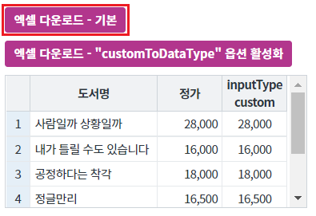
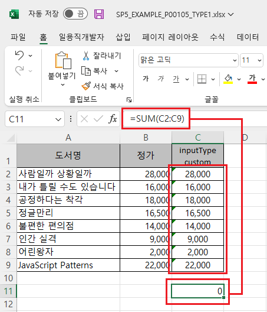
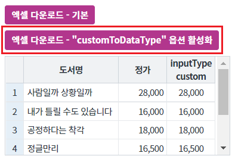
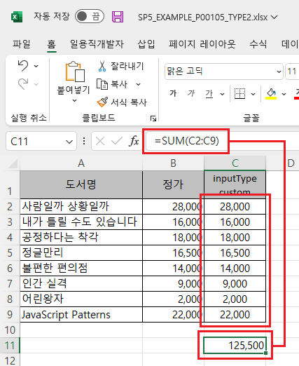
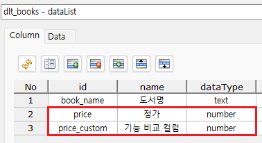
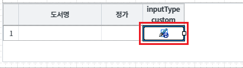
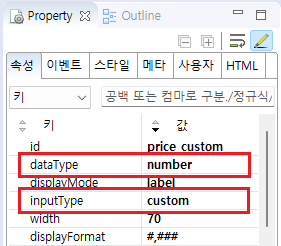
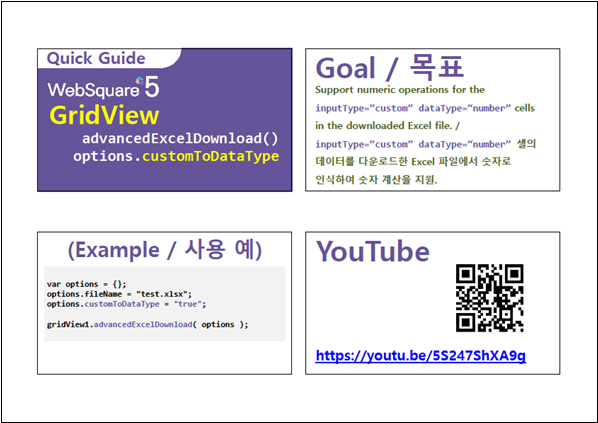

GridView의 엑셀 다운로드 옵션 중 "customToDataType" 설정의 예제입니다. "customToDataType"이 "true"로 지정하면 엑셀에 숫자형 서식을 적용되어 엑셀에서 연산이 가능합니다. 기본 동작은 엑셀에 "일반" 서식으로 적용됩니다.
엑셀 다운로드 옵션 "customToDataType"은 아래의 조건일 때 동작됩니다.
조건)
GridView 컬럼의 inputType이 custom이고,
DataList의 dataType이 number 또는 bigdecimal으로 설정되었을 때.
엑셀 다운로드하기 - 기본 동작
엑셀 다운로드하기 - 엑셀 다운로드의 옵션 "customToDataType" 활성화
[브라우저(Chrome) 실행 예시]

다운로드 된 엑셀 파일 "SP5_EXAMPLE_P00105_TYPE1.xlsx"을 실행합니다.
엑셀 "inputType custom" 컬럼의 값의 합계 수식인 "SUM(C2:C9)를 설정했을 때 연산 값이 "0"으로 표현됩니다.
[다운로드된 엑셀(2021) 파일 예시]

[브라우저(Chrome) 실행 예시]

다운로드 된 엑셀 파일 "SP5_EXAMPLE_P00105_TYPE2.xlsx"을 실행합니다.
엑셀 "inputType custom" 컬럼의 값의 합계 수식인 "SUM(C2:C9)를 설정했을 때 연산 값이 "125,500"으로 표현됩니다.
[다운로드된 엑셀(2021) 파일 예시]

GridView와 연결된 DataList 생성 및 연결 방법은 생략되었습니다.
컬럼의 DataType을 number 또는 bigDecimal으로 지정합니다.
[스튜디오 DataCollection 탭 예시 - DataList 설정]

STEP2. GridView의 컬럼 "inputType custom"의 속성을 지정합니다.
[필수] inputType="custom"
[필수] dataType="number"
[선택] displayFormat="#,###"
id="price_custom" //DataList이 컬럼 id
그림 1.웹스퀘어5 SP5 스튜디오의 Design 탭 예시 - 컬럼 선택

그림 2.웹스퀘어5 SP5 스튜디오의 Property View(속성창) 예시

[소스 코드 예시]
<!-- gridView 의 소스 본문 예시 --> <w2:gridView dataList="data:dlt_books"> <!-- 중략 --> <w2:gBody id="gBody1" style=""> <w2:row id="row2" style=""> <w2:column inputType="custom" id="price_custom" dataType="number" displayFormat="#,###"> </w2:column> <!-- 중략 --> </w2:row> </w2:gBody> </w2:gridView>
원하는 시점에 엑셀 다운로드 스크립트를 작성합니다.
[소스 코드 예시]
//예제 파일의 스크립트 "scwin.btn_ex2_onclick"를 참고하세요. var jsnOptions; jsnOptions = { fileName : "SP5_EXAMPLE_P00105_TYPE2.xlsx", //엑셀의 파일명 customToDataType : "true" //inputType이 custom인 경우 엑셀의 서식을 DataList에 정의된 DataType 형으로 지정합니다. }; //jsnOptions.customToDataType [default: 없음] "true"인 경우 inputType="custom"인 경우 dataType에 따라 Excel 파일에 표시 형식을 출력. dataType="text"인 셀은 Excel의 표시형식에 '텍스트' 출력, dataType="number" 혹은 "bigDecimal" 셀은 "숫자" 출력. //GridView "grd_exam1"의 엑셀 다운로드 실행 grd_exam1.advancedExcelDownload(jsnOptions);
advancedExcelDownload( options , infoArr )
[웹스퀘어5 SP5 개발 가이드] GridView
링크 : https://docs1.inswave.com/sp5_user_guide/86bdcf48029b958b
[웹스퀘어5 SP5 개발 가이드] GridView → Excel 다운로드
링크 : https://docs1.inswave.com/sp5_user_guide/bc10c1b82c9a2a0b
[웹스퀘어5 SP5 개발 가이드] Excel 다운로드 숫자 연산 지원
링크 : https://docs1.inswave.com/sp5_user_guide/bc10c1b82c9a2a0b#51ea57ed89071d04
GridView Excel 다운로드 숫자 연산 지원
링크 : https://youtu.be/5S247ShXA9g
